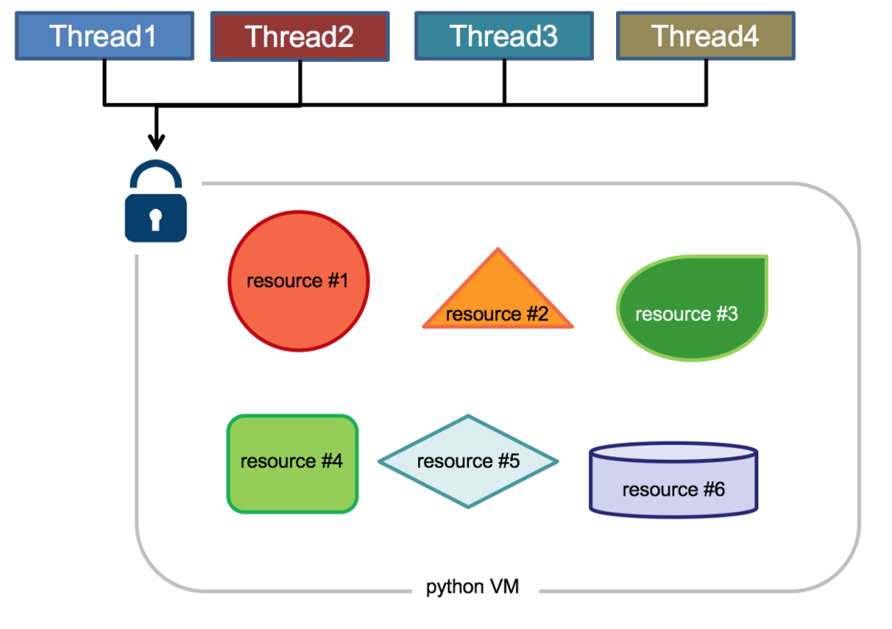

1.概念
进程（process）和线程（thread）是操作系统的基本概念，但是它们比较抽象，不容易掌握。关于多进程和多线程，教科书上最经典的一句话是“进程是资源分配的最小单位，线程是CPU调度的最小单位”。
线程是程序中一个单一的顺序控制流程。进程内一个相对独立的、可调度的执行单元，是系统独立调度和分派CPU的基本单位指运行中的程序的调度单位。在单个程序中同时运行多个线程完成不同的工作，称为多线程。
2.进程与线程区别
进程是资源分配的基本单位。所有与该进程有关的资源，都被记录在进程控制块PCB中。以表示该进程拥有这些资源或正在使用它们。另外，进程也是抢占处理机的调度单位，它拥有一个完整的虚拟地址空间。当进程发生调度时，不同的进程拥有不同的虚拟地址空间，而同一进程内的不同线程共享同一地址空间。
与进程相对应，线程与资源分配无关，它属于某一个进程，并与进程内的其他线程一起共享进程的资源。线程只由相关堆栈（系统栈或用户栈）寄存器和线程控制表TCB组成。寄存器可被用来存储线程内的局部变量，但不能存储其他线程的相关变量。
线程与进程的区别可以归纳为以下4点：
- 地址空间和其它资源（如打开文件）：进程间相互独立，同一进程的各线程间共享。某进程内的线程在其它进程不可见。
- 通信：进程间通信IPC，线程间可以直接读写进程数据段（如全局变量）来进行通信——需要进程同步和互斥手段的辅助，以保证数据的一致性。
- 调度和切换：线程上下文切换比进程上下文切换要快得多。
- 在多线程OS中，进程不是一个可执行的实体。
总结，进程和线程还可以类比为火车和车厢,下面的例子很形象：
- 线程在进程下行进（单纯的车厢无法运行）
- 一个进程可以包含多个线程（一辆火车可以有多个车厢）
- 不同进程间数据很难共享（一辆火车上的乘客很难换到另外一辆火车，比如站点换乘）
- 同一进程下不同线程间数据很易共享（A车厢换到B车厢很容易）
- 进程要比线程消耗更多的计算机资源（采用多列火车相比多个车厢更耗资源）
- 进程间不会相互影响，一个线程挂掉将导致整个进程挂掉（一列火车不会影响到另外一列火车，但是如果一列火车上中间的一节车厢着火了，将影响到该趟火车的所有车厢）
- 进程可以拓展到多机，进程最多适合多核（不同火车可以开在多个轨道上，同一火车的车厢不能在行进的不同的轨道上）
- 进程使用的内存地址可以上锁，即一个线程使用某些共享内存时，其他线程必须等它结束，才能使用这一块内存。（比如火车上的洗手间）－”互斥锁（mutex）”
- 进程使用的内存地址可以限定使用量（比如火车上的餐厅，最多只允许多少人进入，如果满了需要在门口等，等有人出来了才能进去）－“信号量（semaphore）”
3.Python全局解释器锁GIL
全局解释器锁（英语：Global Interpreter Lock，缩写GIL），并不是Python的特性，它是在实现Python解析器（CPython）时所引入的一个概念。由于CPython是大部分环境下默认的Python执行环境。所以在很多人的概念里CPython就是Python，也就想当然的把GIL归结为Python语言的缺陷。
Python代码的执行由Python 虚拟机(也叫解释器主循环，CPython版本)来控制，Python 在设计之初就考虑到要在解释器的主循环中，同时只有一个线程在执行，即在任意时刻，只有一个线程在解释器中运行。对Python 虚拟机的访问由全局解释器锁（GIL）来控制，正是这个锁能保证同一时刻只有一个线程在运行。

GIL 有什么好处？简单来说，它在单线程的情况更快，并且在和 C 库结合时更方便，而且不用考虑线程安全问题，这也是早期 Python 最常见的应用场景和优势。另外，GIL的设计简化了CPython的实现，使得对象模型，包括关键的内建类型如字典，都是隐含可以并发访问的。锁住全局解释器使得比较容易的实现对多线程的支持，但也损失了多处理器主机的并行计算能力。
在多线程环境中，Python 虚拟机按以下方式执行：
- 设置GIL
- 切换到一个线程去运行
- 运行直至指定数量的字节码指令，或者线程主动让出控制（可以调用sleep(0)）
- 把线程设置为睡眠状态
- 解锁GIL
- 再次重复以上所有步骤
Python3.2前，GIL的释放逻辑是当前线程遇见IO操作或者ticks计数达到100（ticks可以看作是python自身的一个计数器，专门做用于GIL，每次释放后归零，这个计数可以通过 sys.setcheckinterval 来调整），进行释放。因为计算密集型线程在释放GIL之后又会立即去申请GIL，并且通常在其它线程还没有调度完之前它就已经重新获取到了GIL，就会导致一旦计算密集型线程获得了GIL，那么它在很长一段时间内都将占据GIL，甚至一直到该线程执行结束。
Python 3.2开始使用新的GIL。新的GIL实现中用一个固定的超时时间来指示当前的线程放弃全局锁。在当前线程保持这个锁，且其他线程请求这个锁时，当前线程就会在5毫秒后被强制释放该锁。该改进在单核的情况下，对于单个线程长期占用GIL的情况有所好转。
在单核CPU上，数百次的间隔检查才会导致一次线程切换。在多核CPU上，存在严重的线程颠簸（thrashing）。而每次释放GIL锁，线程进行锁竞争、切换线程，会消耗资源。单核下多线程，每次释放GIL，唤醒的那个线程都能获取到GIL锁，所以能够无缝执行，但多核下，CPU0释放GIL后，其他CPU上的线程都会进行竞争，但GIL可能会马上又被CPU0拿到，导致其他几个CPU上被唤醒后的线程会醒着等待到切换时间后又进入待调度状态，这样会造成线程颠簸(thrashing)，导致效率更低。
另外，从上面的实现机制可以推导出，Python的多线程对IO密集型代码要比CPU密集型代码更加友好。
针对GIL的应对措施：
- 使用更高版本Python（对GIL机制进行了优化）
- 使用多进程替换多线程（多进程之间没有GIL，但是进程本身的资源消耗较多）
- 指定cpu运行线程（使用affinity模块）
- 使用Jython、IronPython等无GIL解释器
- 全IO密集型任务时才使用多线程
- 使用协程（高效的单线程模式，也称微线程；通常与多进程配合使用）
- 将关键组件用C/C++编写为Python扩展，通过ctypes使Python程序直接调用C语言编译的动态链接库的导出函数。（with nogil调出GIL限制）
4.Python的多进程包multiprocessing
Python的threading包主要运用多线程的开发，但由于GIL的存在，Python中的多线程其实并不是真正的多线程，如果想要充分地使用多核CPU的资源，大部分情况需要使用多进程。在Python 2.6版本的时候引入了multiprocessing包，它完整的复制了一套threading所提供的接口方便迁移。唯一的不同就是它使用了多进程而不是多线程。每个进程有自己的独立的GIL，因此也不会出现进程之间的GIL争抢。
借助这个multiprocessing，你可以轻松完成从单进程到并发执行的转换。multiprocessing支持子进程、通信和共享数据、执行不同形式的同步，提供了Process、Queue、Pipe、Lock等组件。
4.1 Multiprocessing产生的背景
除了应对Python的GIL以外，产生multiprocessing的另外一个原因时Windows操作系统与Linux/Unix系统的不一致。
Unix/Linux操作系统提供了一个fork()系统调用，它非常特殊。普通的函数，调用一次，返回一次，但是fork()调用一次，返回两次，因为操作系统自动把当前进程（父进程）复制了一份（子进程），然后，分别在父进程和子进程内返回。子进程永远返回0，而父进程返回子进程的ID。这样做的理由是，一个父进程可以fork出很多子进程，所以，父进程要记下每个子进程的ID，而子进程只需要调用getpid()就可以拿到父进程的ID。
Python的os模块封装了常见的系统调用，其中就包括fork，可以在Python程序中轻松创建子进程：
1
2
3
4
5
6
7
8
9
10
11
12
13
14
15
import os
print('Process (%s) start...' % os.getpid())
# Only works on Unix/Linux/Mac:
pid = os.fork()
if pid == 0:
print('I am child process (%s) and my parent is %s.' % (os.getpid(), os.getppid()))
else:
print('I (%s) just created a child process (%s).' % (os.getpid(), pid))
上述代码在Linux、Unix和Mac上的执行结果为：
1
2
3
4
5
Process (876) start...
I (876) just created a child process (877).
I am child process (877) and my parent is 876.
有了fork调用，一个进程在接到新任务时就可以复制出一个子进程来处理新任务，常见的Apache服务器就是由父进程监听端口，每当有新的http请求时，就fork出子进程来处理新的http请求。
由于Windows没有fork调用，上面的代码在Windows上无法运行。由于Python是跨平台的，自然也应该提供一个跨平台的多进程支持。multiprocessing模块就是跨平台版本的多进程模块。multiprocessing模块封装了fork()调用，使我们不需要关注fork()的细节。由于Windows没有fork调用，因此，multiprocessing需要“模拟”出fork的效果。
4.2 multiprocessing常用组件及功能
创建管理进程模块：
- Process（用于创建进程）
- Pool（用于创建管理进程池）
- Queue（用于进程通信，资源共享）
- Value，Array（用于进程通信，资源共享）
- Pipe（用于管道通信）
- Manager（用于资源共享）
同步子进程模块：
- Condition（条件变量）
- Event（事件）
- Lock（互斥锁）
- RLock（可重入的互斥锁(同一个进程可以多次获得它，同时不会造成阻塞)
- Semaphore（信号量）
接下来就一起来学习下每个组件及功能的具体使用方法。
5.multiprocessing的使用
5.1 Process（用于创建进程）
multiprocessing模块提供了一个Process类来代表一个进程对象。
在multiprocessing中，每一个进程都用一个Process类来表示。
构造方法：Process([group [, target [, name [, args [, kwargs]]]]])
- group：分组，实际上不使用，值始终为None
- target：表示调用对象，即子进程要执行的任务，你可以传入方法名（函数名）
- name：为子进程设定名称
- args：要传给target函数的位置参数，以元组方式进行传入。
- kwargs：要传给target函数的字典参数，以字典方式进行传入。
实例方法：
- start()：启动进程，并调用该子进程中的p.run()
- run()：进程启动时运行的方法，正是它去调用target指定的函数，我们自定义类的类中一定要实现该方法
- terminate()：强制终止进程p，不会进行任何清理操作，如果p创建了子进程，该子进程就成了僵尸进程，使用该方法需要特别小心这种情况（会产生僵尸进程）。如果p还保存了一个锁那么也将不会被释放，进而导致死锁
- is_alive()：返回进程是否在运行。如果p仍然运行，返回True
- join([timeout])：进程同步，主进程等待子进程完成后再执行后面的代码。线程等待p终止（强调：是主线程处于等的状态，而p是处于运行的状态）。timeout是可选的超时时间（超过这个时间，父线程不再等待子线程，继续往下执行），需要强调的是，p.join只能join住start开启的进程，而不能join住run开启的进程
属性介绍：
- daemon：默认值为False，如果设为True，代表p为后台运行的守护进程；当p的父进程终止时，p也随之终止，并且设定为True后，p不能创建自己的新进程（因为p是守护进程的子进程）；必须在p.start()之前设置
- name：进程的名称
- pid：进程的pid
- exitcode：进程在运行时为None、如果为–N，表示被信号N结束(了解即可)
- authkey：进程的身份验证键,默认是由os.urandom()随机生成的32字符的字符串。这个键的用途是为涉及网络连接的底层进程间通信提供安全性，这类连接只有在具有相同的身份验证键时才能成功（了解即可）
使用示例：（注意：在windows中Process()必须放到if name == "main":下）
1
2
3
4
5
6
7
8
9
10
11
12
13
from multiprocessing import Process
import os
def run_proc(name):
print('Run child process %s (%s)...' % (name, os.getpid()))
if __name__=='__main__':
print('Parent process %s.' % os.getpid())
p = Process(target=run_proc, args=('test',))
print('Child process will start.')
p.start()
p.join()
print('Child process end.')
5.2 Pool（用于创建管理进程池）
Pool类用于需要执行的目标很多，而手动限制进程数量又太繁琐时，如果目标少且不用控制进程数量则可以用Process类。Pool可以提供指定数量的进程，供用户调用，当有新的请求提交到Pool中时，如果池还没有满，那么就会创建一个新的进程用来执行该请求；但如果池中的进程数已经达到规定最大值，那么该请求就会等待，直到池中有进程结束，就重用进程池中的进程。
构造方法：Pool([processes[, initializer[, initargs[, maxtasksperchild[, context]]]]])
- processes ：要创建的进程数，如果省略，将默认使用cpu_count()返回的数量。
- initializer：每个工作进程启动时要执行的可调用对象，默认为None。如果initializer是None，那么每一个工作进程在开始的时候会调用initializer(*initargs)。
- initargs：是要传给initializer的参数组。
- maxtasksperchild：工作进程退出之前可以完成的任务数，完成后用一个新的工作进程来替代原进程，来让闲置的资源被释放。maxtasksperchild默认是None，意味着只要Pool存在工作进程就会一直存活。
- context: 用在制定工作进程启动时的上下文，一般使用Pool() 或者一个context对象的Pool()方法来创建一个池，两种方法都适当的设置了context。
实例方法：
- apply(func[, args[, kwargs]])：在一个池工作进程中执行func(args,*kwargs),然后返回结果。需要强调的是：此操作并不会在所有池工作进程中并执行func函数。如果要通过不同参数并发地执行func函数，必须从不同线程调用p.apply()函数或者使用p.apply_async()。它是阻塞的。apply很少使用
- apply_async(func[, arg[, kwds={}[, callback=None]]])：在一个池工作进程中执行func(args,*kwargs),然后返回结果。此方法的结果是AsyncResult类的实例，callback是可调用对象，接收输入参数。当func的结果变为可用时，将理解传递给callback。callback禁止执行任何阻塞操作，否则将接收其他异步操作中的结果。它是非阻塞。
- map(func, iterable[, chunksize=None])：Pool类中的map方法，与内置的map函数用法行为基本一致，它会使进程阻塞直到返回结果。注意，虽然第二个参数是一个迭代器，但在实际使用中，必须在整个队列都就绪后，程序才会运行子进程。
- map_async(func, iterable[, chunksize=None])：map_async与map的关系同apply与apply_async
- imap()：imap 与 map的区别是，map是当所有的进程都已经执行完了，并将结果返回了，imap()则是立即返回一个iterable可迭代对象。
- imap_unordered()：不保证返回的结果顺序与进程添加的顺序一致。
- close()：关闭进程池，防止进一步操作。如果所有操作持续挂起，它们将在工作进程终止前完成。
- join()：等待所有工作进程退出。此方法只能在close()或teminate()之后调用，让其不再接受新的Process。
- terminate()：结束工作进程，不再处理未处理的任务。
方法apply_async()和map_async()的返回值是AsyncResul的实例obj。实例具有以下方法：
- get()：返回结果，如果有必要则等待结果到达。timeout是可选的。如果在指定时间内还没有到达，将引发异常。如果远程操作中引发了异常，它将在调用此方法时再次被引发。
- ready()：如果调用完成，返回True
- successful()：如果调用完成且没有引发异常，返回True，如果在结果就绪之前调用此方法，引发异常
- wait([timeout])：等待结果变为可用。
- terminate()：立即终止所有工作进程，同时不执行任何清理或结束任何挂起工作。如果p被垃圾回收，将自动调用此函数
使用示例：
1
2
3
4
5
6
7
8
9
10
11
12
13
14
15
16
\# -*- coding:utf-8 -*-
\# Pool+map
from multiprocessing import Pool
def test(i):
print(i)
if __name__ == "__main__":
lists = range(100)
pool = Pool(8)
pool.map(test, lists)
pool.close()
pool.join()
1
2
3
4
5
6
7
8
9
10
11
12
13
14
15
16
17
18
19
20
21
# -*- coding:utf-8 -*-
# 异步进程池（非阻塞）
from multiprocessing import Pool
def test(i):
print(i)
if __name__ == "__main__":
pool = Pool(8)
for i in range(100):
'''
For循环中执行步骤：
（1）循环遍历，将100个子进程添加到进程池（相对父进程会阻塞）
（2）每次执行8个子进程，等一个子进程执行完后，立马启动新的子进程。（相对父进程不阻塞）
apply_async为异步进程池写法。异步指的是启动子进程的过程，与父进程本身的执行（print）是异步的，而For循环中往进程池添加子进程的过程，与父进程本身的执行却是同步的。
'''
pool.apply_async(test, args=(i,)) # 维持执行的进程总数为8，当一个进程执行完后启动一个新进程.
print("test")
pool.close()
pool.join()
1
2
3
4
5
6
7
8
9
10
11
12
13
14
15
16
17
18
19
20
21
# -*- coding:utf-8 -*-
# 异步进程池（非阻塞）
from multiprocessing import Pool
def test(i):
print(i)
if __name__ == "__main__":
pool = Pool(8)
for i in range(100):
'''
实际测试发现，for循环内部执行步骤：
（1）遍历100个可迭代对象，往进程池放一个子进程
（2）执行这个子进程，等子进程执行完毕，再往进程池放一个子进程，再执行。（同时只执行一个子进程）
for循环执行完毕，再执行print函数。
'''
pool.apply(test, args=(i,)) # 维持执行的进程总数为8，当一个进程执行完后启动一个新进程.
print("test")
pool.close()
pool.join()
5.3 Queue（用于进程通信，资源共享）
在使用多进程的过程中，最好不要使用共享资源。普通的全局变量是不能被子进程所共享的，只有通过Multiprocessing组件构造的数据结构可以被共享。
Queue是用来创建进程间资源共享的队列的类，使用Queue可以达到多进程间数据传递的功能（缺点：只适用Process类，不能在Pool进程池中使用）。
构造方法：Queue([maxsize])
- maxsize是队列中允许最大项数，省略则无大小限制。
实例方法：
- put()：用以插入数据到队列。put方法还有两个可选参数：blocked和timeout。如果blocked为True（默认值），并且timeout为正值，该方法会阻塞timeout指定的时间，直到该队列有剩余的空间。如果超时，会抛出Queue.Full异常。如果blocked为False，但该Queue已满，会立即抛出Queue.Full异常。
- get()：可以从队列读取并且删除一个元素。get方法有两个可选参数：blocked和timeout。如果blocked为True（默认值），并且timeout为正值，那么在等待时间内没有取到任何元素，会抛出Queue.Empty异常。如果blocked为False，有两种情况存在，如果Queue有一个值可用，则立即返回该值，否则，如果队列为空，则立即抛出Queue.Empty异常。若不希望在empty的时候抛出异常，令blocked为True或者参数全部置空即可。
- get_nowait()：同q.get(False)
- put_nowait()：同q.put(False)
- empty()：调用此方法时q为空则返回True，该结果不可靠，比如在返回True的过程中，如果队列中又加入了项目。
- full()：调用此方法时q已满则返回True，该结果不可靠，比如在返回True的过程中，如果队列中的项目被取走。
- qsize()：返回队列中目前项目的正确数量，结果也不可靠，理由同q.empty()和q.full()一样
使用示例：
1
2
3
4
5
6
7
8
9
10
11
12
13
14
15
16
17
18
19
20
21
22
23
24
25
from multiprocessing import Process, Queue
import os, time, random
def write(q):
print('Process to write: %s' % os.getpid())
for value in ['A', 'B', 'C']:
print('Put %s to queue...' % value)
q.put(value)
time.sleep(random.random())
def read(q):
print('Process to read: %s' % os.getpid())
while True:
value = q.get(True)
print('Get %s from queue.' % value)
if __name__ == "__main__":
q = Queue()
pw = Process(target=write, args=(q,))
pr = Process(target=read, args=(q,))
pw.start()
pr.start()
pw.join() # 等待pw结束
pr.terminate() # pr进程里是死循环，无法等待其结束，只能强行终止
JoinableQueue就像是一个Queue对象，但队列允许项目的使用者通知生成者项目已经被成功处理。通知进程是使用共享的信号和条件变量来实现的。
构造方法：JoinableQueue([maxsize])
- maxsize：队列中允许最大项数，省略则无大小限制。
实例方法
JoinableQueue的实例p除了与Queue对象相同的方法之外还具有：
- task_done()：使用者使用此方法发出信号，表示q.get()的返回项目已经被处理。如果调用此方法的次数大于从队列中删除项目的数量，将引发ValueError异常
- join():生产者调用此方法进行阻塞，直到队列中所有的项目均被处理。阻塞将持续到队列中的每个项目均调用q.task_done（）方法为止
使用示例：
1
2
3
4
5
6
7
8
9
10
11
12
13
14
15
16
17
18
19
20
21
22
23
24
25
# -*- coding:utf-8 -*-
from multiprocessing import Process, JoinableQueue
import time, random
def consumer(q):
while True:
res = q.get()
print('消费者拿到了 %s' % res)
q.task_done()
def producer(seq, q):
for item in seq:
time.sleep(random.randrange(1,2))
q.put(item)
print('生产者做好了 %s' % item)
q.join()
if __name__ == "__main__":
q = JoinableQueue()
seq = ('产品%s' % i for i in range(5))
p = Process(target=consumer, args=(q,))
p.daemon = True # 设置为守护进程，在主线程停止时p也停止，但是不用担心，producer内调用q.join保证了consumer已经处理完队列中的所有元素
p.start()
producer(seq, q)
print('主线程')
5.4 Value，Array（用于进程通信，资源共享）
multiprocessing 中Value和Array的实现原理都是在共享内存中创建ctypes()对象来达到共享数据的目的，两者实现方法大同小异，只是选用不同的ctypes数据类型而已。
Value
构造方法：Value((typecode_or_type, args[, lock])
- typecode_or_type：定义ctypes()对象的类型，可以传Type code或 C Type，具体对照表见下文。
- args：传递给typecode_or_type构造函数的参数
- lock：默认为True，创建一个互斥锁来限制对Value对象的访问，如果传入一个锁，如Lock或RLock的实例，将用于同步。如果传入False，Value的实例就不会被锁保护，它将不是进程安全的。
typecode_or_type支持的类型：
1
2
3
4
5
6
7
8
9
10
11
12
13
14
15
16
17
18
19
20
21
22
23
24
25
26
27
28
29
| Type code | C Type | Python Type | Minimum size in bytes |
| --------- | ------------------ | ----------------- | --------------------- |
| `'b'` | signed char | int | 1 |
| `'B'` | unsigned char | int | 1 |
| `'u'` | Py_UNICODE | Unicode character | 2 |
| `'h'` | signed short | int | 2 |
| `'H'` | unsigned short | int | 2 |
| `'i'` | signed int | int | 2 |
| `'I'` | unsigned int | int | 2 |
| `'l'` | signed long | int | 4 |
| `'L'` | unsigned long | int | 4 |
| `'q'` | signed long long | int | 8 |
| `'Q'` | unsigned long long | int | 8 |
| `'f'` | float | float | 4 |
| `'d'` | double | float | 8 |
参考地址：https://docs.python.org/3/library/array.html
Array
构造方法：Array(typecode_or_type, size_or_initializer, **kwds[, lock])
- typecode_or_type：同上
- size_or_initializer：如果它是一个整数，那么它确定数组的长度，并且数组将被初始化为零。否则，size_or_initializer是用于初始化数组的序列，其长度决定数组的长度。
- kwds：传递给typecode_or_type构造函数的参数
- lock：同上
使用示例：
1
2
3
4
5
6
7
8
9
10
11
12
13
14
import multiprocessing
def f(n, a):
n.value = 3.14
a[0] = 5
if __name__ == '__main__':
num = multiprocessing.Value('d', 0.0)
arr = multiprocessing.Array('i', range(10))
p = multiprocessing.Process(target=f, args=(num, arr))
p.start()
p.join()
print(num.value)
print(arr[:])
注意：Value和Array只适用于Process类。
5.5 Pipe（用于管道通信）
多进程还有一种数据传递方式叫管道原理和 Queue相同。Pipe可以在进程之间创建一条管道，并返回元组（conn1,conn2）,其中conn1，conn2表示管道两端的连接对象，强调一点：必须在产生Process对象之前产生管道。
构造方法：Pipe([duplex])
- dumplex:默认管道是全双工的，如果将duplex射成False，conn1只能用于接收，conn2只能用于发送。
实例方法：
- send(obj)：通过连接发送对象。obj是与序列化兼容的任意对象
- recv()：接收conn2.send(obj)发送的对象。如果没有消息可接收，recv方法会一直阻塞。如果连接的另外一端已经关闭，那么recv方法会抛出EOFError。
- close(): 关闭连接。如果conn1被垃圾回收，将自动调用此方法
- fileno(): 返回连接使用的整数文件描述符
- poll([timeout]): 如果连接上的数据可用，返回True。timeout指定等待的最长时限。如果省略此参数，方法将立即返回结果。如果将timeout射成None，操作将无限期地等待数据到达。
- recv_bytes([maxlength]): 接收c.send_bytes()方法发送的一条完整的字节消息。maxlength指定要接收的最大字节数。如果进入的消息，超过了这个最大值，将引发IOError异常，并且在连接上无法进行进一步读取。如果连接的另外一端已经关闭，再也不存在任何数据，将引发EOFError异常。
- send_bytes(buffer [, offset [, size]])：通过连接发送字节数据缓冲区，buffer是支持缓冲区接口的任意对象，offset是缓冲区中的字节偏移量，而size是要发送字节数。结果数据以单条消息的形式发出，然后调用c.recv_bytes()函数进行接收
- recv_bytes_into(buffer [, offset]):接收一条完整的字节消息，并把它保存在buffer对象中，该对象支持可写入的缓冲区接口（即bytearray对象或类似的对象）。offset指定缓冲区中放置消息处的字节位移。返回值是收到的字节数。如果消息长度大于可用的缓冲区空间，将引发BufferTooShort异常。
使用示例：
1
2
3
4
5
6
7
8
9
10
11
12
13
14
15
16
from multiprocessing import Process, Pipe
import time
# 子进程执行方法
def f(Subconn):
time.sleep(1)
Subconn.send("吃了吗")
print("来自父亲的问候:", Subconn.recv())
Subconn.close()
if __name__ == "__main__":
parent_conn, child_conn = Pipe() # 创建管道两端
p = Process(target=f, args=(child_conn,)) # 创建子进程
p.start()
print("来自儿子的问候:", parent_conn.recv())
parent_conn.send("嗯")
5.6 Manager（用于资源共享）
Manager()返回的manager对象控制了一个server进程，此进程包含的python对象可以被其他的进程通过proxies来访问。从而达到多进程间数据通信且安全。Manager模块常与Pool模块一起使用。
Manager支持的类型有list,dict,Namespace,Lock,RLock,Semaphore,BoundedSemaphore,Condition,Event,Queue,Value和Array。
管理器是独立运行的子进程，其中存在真实的对象，并以服务器的形式运行，其他进程通过使用代理访问共享对象，这些代理作为客户端运行。Manager()是BaseManager的子类，返回一个启动的SyncManager()实例，可用于创建共享对象并返回访问这些共享对象的代理。
BaseManager，创建管理器服务器的基类
构造方法：BaseManager([address[, authkey]])
- address：(hostname，port)，指定服务器的网址地址，默认为简单分配一个空闲的端口
- authkey：连接到服务器的客户端的身份验证，默认为current_process().authkey的值
实例方法：
- start([initializer[, initargs]])：启动一个单独的子进程，并在该子进程中启动管理器服务器
- get_server()：获取服务器对象
- connect()：连接管理器对象
- shutdown()：关闭管理器对象，只能在调用了start()方法之后调用
实例属性：
- address：只读属性，管理器服务器正在使用的地址
SyncManager，**以下类型均不是进程安全的，需要加锁..
实例方法：
- Array(self,*args,**kwds)
- BoundedSemaphore(self,*args,**kwds)
- Condition(self,*args,**kwds)
- Event(self,*args,**kwds)
- JoinableQueue(self,*args,**kwds)
- Lock(self,*args,**kwds)
- Namespace(self,*args,**kwds)
- Pool(self,*args,**kwds)
- Queue(self,*args,**kwds)
- RLock(self,*args,**kwds)
- Semaphore(self,*args,**kwds)
- Value(self,*args,**kwds)
- dict(self,*args,**kwds)
- list(self,*args,**kwds)
使用示例：
1
2
3
4
5
6
7
8
9
10
11
12
13
14
15
16
17
18
19
20
21
22
23
24
import multiprocessing
def f(x, arr, l, d, n):
x.value = 3.14
arr[0] = 5
l.append('Hello')
d[1] = 2
n.a = 10
if __name__ == '__main__':
server = multiprocessing.Manager()
x = server.Value('d', 0.0)
arr = server.Array('i', range(10))
l = server.list()
d = server.dict()
n = server.Namespace()
proc = multiprocessing.Process(target=f, args=(x, arr, l, d, n))
proc.start()
proc.join()
print(x.value)
print(arr)
print(l)
print(d)
print(n)
6.同步子进程模块
6.1 Lock（互斥锁）
Lock锁的作用是当多个进程需要访问共享资源的时候，避免访问的冲突。加锁保证了多个进程修改同一块数据时，同一时间只能有一个修改，即串行的修改，牺牲了速度但保证了数据安全。Lock包含两种状态——锁定和非锁定，以及两个基本的方法。
构造方法：Lock()
实例方法：
- acquire([timeout]): 使线程进入同步阻塞状态，尝试获得锁定。
- release(): 释放锁。使用前线程必须已获得锁定，否则将抛出异常。
使用示例：
1
2
3
4
5
6
7
8
9
10
11
from multiprocessing import Process, Lock
def l(lock, num):
lock.acquire()
print("Hello Num: %s" % (num))
lock.release()
if __name__ == '__main__':
lock = Lock() # 这个一定要定义为全局
for num in range(20):
Process(target=l, args=(lock, num)).start()
6.2 RLock（可重入的互斥锁)
RLock（可重入锁,即同一个进程可以多次获得它，同时不会造成阻塞）是一个可以被同一个进程请求多次的同步指令。RLock使用了“拥有的线程”和“递归等级”的概念，处于锁定状态时，RLock被某个线程拥有。拥有RLock的线程可以再次调用acquire()，释放锁时需要调用release()相同次数。可以认为RLock包含一个锁定池和一个初始值为0的计数器，每次成功调用 acquire() / release()，计数器将+1/-1，为0时锁处于未锁定状态。
构造方法：
` RLock()`
实例方法：
- acquire([timeout])：同Lock
- release(): 同Lock
6.3 Semaphore（信号量）
信号量是一个更高级的锁机制。信号量内部有一个计数器而不像锁对象内部有锁标识，而且只有当占用信号量的线程数超过信号量时线程才阻塞。这允许了多个线程可以同时访问相同的代码区。
比如厕所有3个坑，那最多只允许3个人上厕所，后面的人只能等里面有人出来了才能再进去，如果指定信号量为3，那么来一个人获得一把锁，计数加1，当计数等于3时，后面的人均需要等待。一旦释放，就有人可以获得一把锁。
构造方法：Semaphore([value])
- value：设定信号量，默认值为1
实例方法：
- acquire([timeout])：同Lock
- release(): 同Lock
使用示例：
1
2
3
4
5
6
7
8
9
10
11
12
13
14
15
16
17
18
19
from multiprocessing import Process, Semaphore
import time, random
def go_wc(sem, user):
sem.acquire()
print('%s 占到一个茅坑' % user)
time.sleep(random.randint(0, 3))
sem.release()
print(user, 'OK')
if __name__ == '__main__':
sem = Semaphore(2)
p_l = []
for i in range(5):
p = Process(target=go_wc, args=(sem, 'user%s' % i,))
p.start()
p_l.append(p)
for i in p_l:
i.join()
6.4 Condition（条件变量）
可以把Condition理解为一把高级的锁，它提供了比Lock, RLock更高级的功能，允许我们能够控制复杂的线程同步问题。Condition在内部维护一个锁对象（默认是RLock），可以在创建Condigtion对象的时候把琐对象作为参数传入。Condition也提供了acquire, release方法，其含义与锁的acquire, release方法一致，其实它只是简单的调用内部锁对象的对应的方法而已。Condition还提供了其他的一些方法。
构造方法：Condition([lock/rlock])
- 可以传递一个Lock/RLock实例给构造方法，否则它将自己生成一个RLock实例。
实例方法：
- acquire([timeout])：首先进行acquire，然后判断一些条件。如果条件不满足则wait
- release()：释放 Lock
- wait([timeout]): 调用这个方法将使线程进入Condition的等待池等待通知，并释放锁。使用前线程必须已获得锁定，否则将抛出异常。处于wait状态的线程接到通知后会重新判断条件。
- notify(): 调用这个方法将从等待池挑选一个线程并通知，收到通知的线程将自动调用acquire()尝试获得锁定（进入锁定池）；其他线程仍然在等待池中。调用这个方法不会释放锁定。使用前线程必须已获得锁定，否则将抛出异常。
- notifyAll(): 调用这个方法将通知等待池中所有的线程，这些线程都将进入锁定池尝试获得锁定。调用这个方法不会释放锁定。使用前线程必须已获得锁定，否则将抛出异常。
使用示例：
1
2
3
4
5
6
7
8
9
10
11
12
13
14
15
16
17
18
19
20
21
22
23
24
25
26
27
28
29
30
31
32
33
34
35
36
37
38
39
40
41
42
43
44
45
46
47
import multiprocessing
import time
def stage_1(cond):
"""
perform first stage of work,
then notify stage_2 to continue
"""
name = multiprocessing.current_process().name
print('Starting', name)
with cond:
print('{} done and ready for stage 2'.format(name))
cond.notify_all()
def stage_2(cond):
"""
wait for the condition telling us stage_1 is done
"""
name = multiprocessing.current_process().name
print('Starting', name)
with cond:
cond.wait()
print('{} running'.format(name))
if __name__ == '__main__':
condition = multiprocessing.Condition()
s1 = multiprocessing.Process(name='s1',
target=stage_1,
args=(condition,))
s2_clients = [
multiprocessing.Process(
name='stage_2[{}]'.format(i),
target=stage_2,
args=(condition,),
)
for i in range(1, 3)
]
for c in s2_clients:
c.start()
time.sleep(1)
s1.start()
s1.join()
for c in s2_clients:
c.join()
6.5 Event（事件）
Event内部包含了一个标志位，初始的时候为false。可以使用set()来将其设置为true；或者使用clear()将其从新设置为false；可以使用is_set()来检查标志位的状态；
另一个最重要的函数就是wait(timeout=None)，用来阻塞当前线程，直到event的内部标志位被设置为true或者timeout超时。如果内部标志位为true则wait()函数立即返回。
使用示例：
1
2
3
4
5
6
7
8
9
10
11
12
13
14
15
16
17
18
19
20
21
22
23
24
25
26
27
28
29
30
31
32
33
34
35
36
37
38
39
import multiprocessing
import time
def wait_for_event(e):
"""
Wait for the event to be set before doing anything
"""
print('wait_for_event: starting')
e.wait()
print('wait_for_event: e.is_set()->', e.is_set())
def wait_for_event_timeout(e, t):
"""
Wait t seconds and then timeout
"""
print('wait_for_event_timeout: starting')
e.wait(t)
print('wait_for_event_timeout: e.is_set()->', e.is_set())
if __name__ == '__main__':
e = multiprocessing.Event()
w1 = multiprocessing.Process(
name='block',
target=wait_for_event,
args=(e,),
)
w1.start()
w2 = multiprocessing.Process(
name='nonblock',
target=wait_for_event_timeout,
args=(e, 2),
)
w2.start()
print('main: waiting before calling Event.set()')
time.sleep(3)
e.set()
print('main: event is set')
参考链接：https://mp.weixin.qq.com/s/tPH2CkR4OPLqv0M9K9fzKA